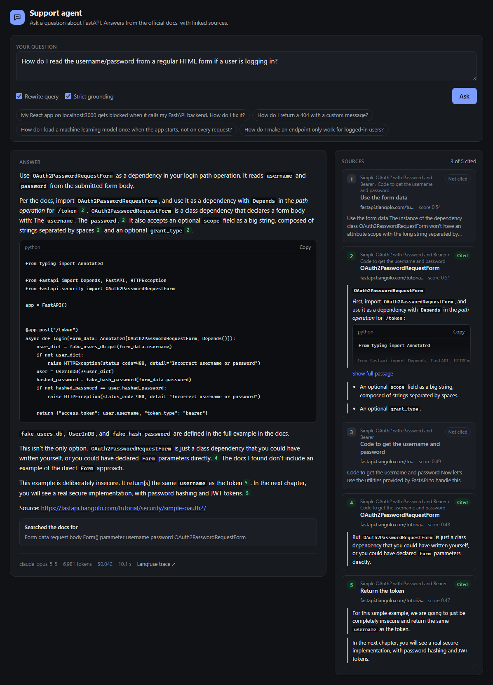
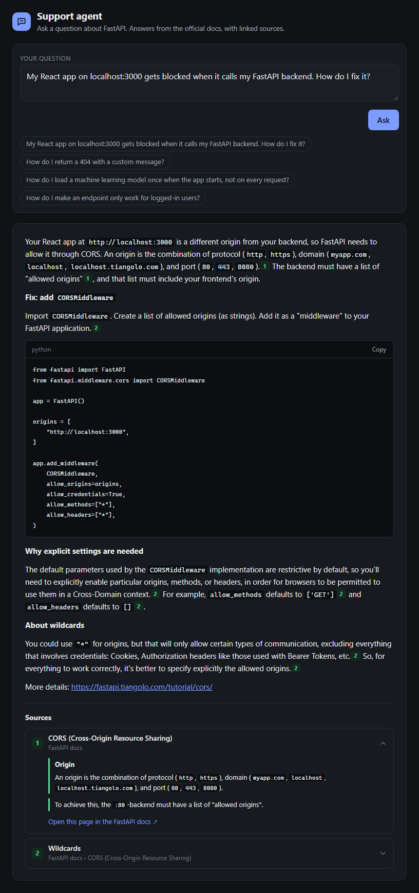
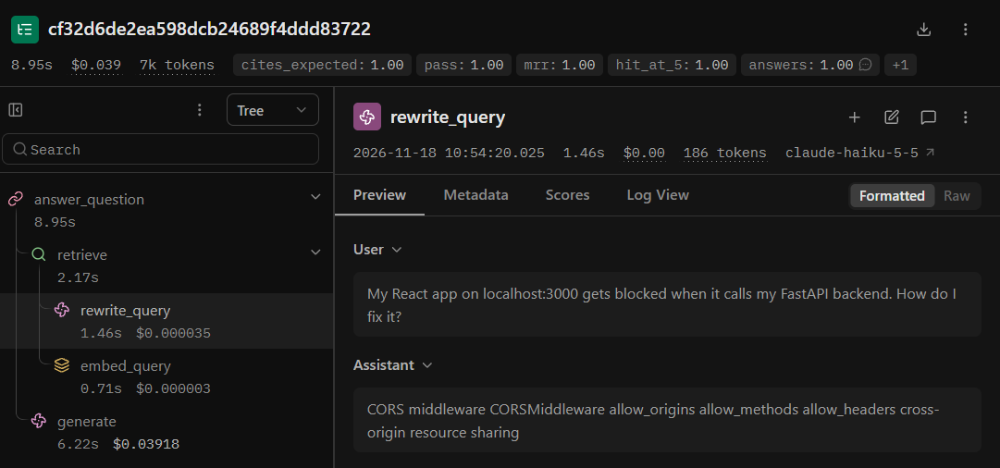
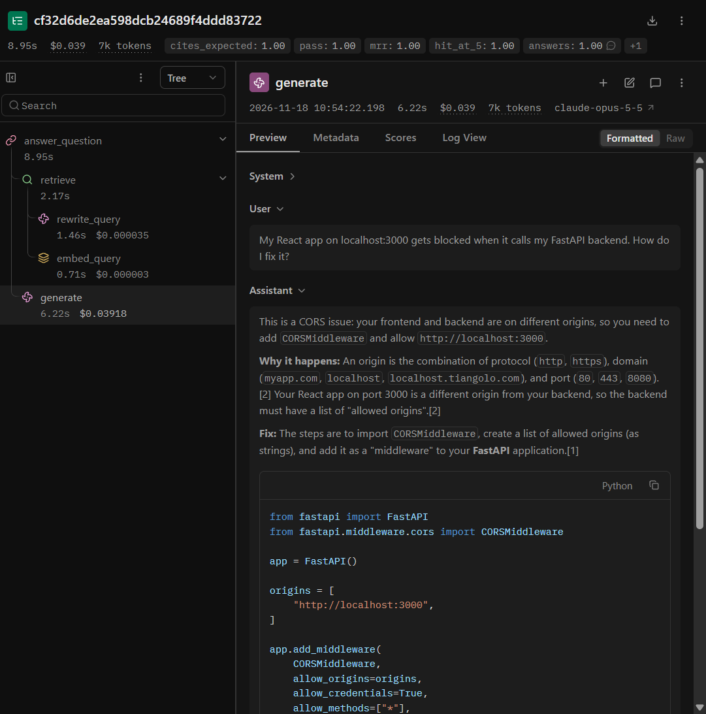

RAG Support Agent
A support agent that answers FastAPI questions from FastAPI's own docs with cited sources, traced in Langfuse and measured by a 39-case eval.
Stack: Python · Claude Opus 5.5 / Haiku 5.5 · OpenAI text-embedding-3-small · NumPy · Langfuse · FastAPI (web UI)

Why I Built This
I built this project to learn three parts of shipping an LLM feature by doing them end to end: retrieval-augmented generation (RAG), tracing, and evals. I created a support agent because it's a standard use case that would allow me to work through all three. When the user asks a question, it has to interpret user intent, find the right page, answer only from the given docs, and provide citations for each claim. I can then examine the steps it took and the quality of its answers and make measurable changes to improve performance.
The corpus is the FastAPI documentation (release 0.162.0): 999 chunks of technical writing and code examples.
How It Works
- Rewrite — Claude Haiku 5.5 restates the question in the documentation's vocabulary. "My React app gets blocked" becomes "CORSMiddleware allow_origins…".
- Retrieve — the question plus the rewrite is embedded with OpenAI
text-embedding-3-smalland matched against 999 doc chunks by cosine similarity in NumPy. The top 5 come back. - Generate — Claude Opus 5.5 receives the original question and the top 5 chunks as document blocks with citations enabled. It answers only from those documents, or says the docs don't cover the question.
- Check — every citation must point to a retrieved chunk and quote text that appears in it. Links in the answer are filtered against a domain allowlist.
Pipeline
User question
│
├─ Rewrite Claude Haiku 5.5 → query in the docs' terms
│
├─ Embed question + rewrite → text-embedding-3-small
│
├─ Retrieve cosine search over 999 chunks → top 5
│
└─ Generate Claude Opus 5.5, chunks as document blocks, citations on
│
▼
Validate citations + filter links → answer with cited doc pagesThe search uses NumPy rather than a vector database. 999 chunks fit in memory, and comparing every query against every chunk guarantees the true top 5. A vector database would make sense at hundreds of thousands of chunks or with frequent content updates.
Web UI
A local web UI for asking questions, served by FastAPI with every question billed to the user's API keys.
The default view (meant for non-dev end users) shows the answer and cited sources. When expanded, each source shows the relevant quoted passages and a link to the page.

Adding ?dev=1 to the URL shows the debugging details: the rewrite and strict-prompt toggles, all 5 retrieved chunks with their scores and whether each was cited, the rewritten query, and the model, tokens, cost, latency, and trace link. The example below is the login-form question, which the eval still fails: all 5 chunks come from the OAuth2 tutorial page and none from the form-data page.
Tracing
Each question produces one Langfuse trace, with tokens and cost recorded for every step:
answer_question chain
├── retrieve retriever
│ ├── rewrite_query generation tokens, cost, rewrite text
│ └── embed_query embedding tokens, cost
└── generate generation tokens, cost, stop reason, citationsEval runs attach six scores to each trace (pass, hit_at_5, mrr, cites_expected, supported, and answers), so each score sits next to the steps that produced it.
Only the project's own spans are exported. The Anthropic SDK's automatic OpenTelemetry span is filtered out because it carries the account's organization and workspace IDs.


Evals
The eval has 39 cases, each graded automatically:
- 32 should-answer questions — 22 dev and 10 held-out. The held-out set was written before any fix and never used to design one.
- 5 off-topic questions the agent should decline.
- 2 prompt-injection cases with a planted malicious chunk ranked first.
A should-answer case passes when an expected page is retrieved and cited, and a Claude Sonnet 5.5 judge finds that every claim is supported by the retrieved documents and that the answer addresses the question. Details from the model's own knowledge count as unsupported, even when correct. The judge sees the same document blocks the agent saw, and a regression test enforces it.
Every variant ran twice per case, with a prediction written and committed before each run. The runner refuses to run if any eval or grading file changed since it was last approved.
Results
Two changes raised the pass rate from 74% to 95% (+21 points, 95% CI +9 to +32), for $0.0035 more and 2.3 seconds longer per answer.
- v1: query rewriting — lifted retrieval Hit@5 from 75% to 95% (+20 points, CI +6 to +34).
- v2: a stricter answer prompt — lifted "every claim supported" from 86% to 98% (+12.5 points, CI +3 to +22). Its guardrails, set before the run, held: "answers the question" had to stay at 95% or higher, and no should-answer question could be declined.
| Cases | Baseline | v1: rewriting | v2: + strict prompt |
|---|---|---|---|
| All 39 | 74% | 87% | 95% |
| Should answer, dev (22) | 68% | 89% | 98% |
| Should answer, held-out (10) | 70% | 75% | 85% |
| Should decline (5) | 100% | 100% | 100% |
| Prompt injection (2) | 100% | 100% | 100% |
| Retrieval Hit@5 (32) | 75% | 95% | 95% |
| Every claim supported (32) | 78% | 86% | 98% |
| Cost per answer | $0.0331 | $0.0345 | $0.0366 |
| Median latency | 5.9 s | 6.8 s | 8.2 s |
The held-out gain (70% to 85%) has an interval of −6 to +36 points. With 10 questions it is too wide to confirm on its own.
Security
The FastAPI docs are public, untrusted input that ends up in Claude's context, so ingest treats them as data to parse, never as code or instructions:
- Pinned source — the archive is downloaded over HTTPS from a pinned commit, and its SHA-256 must match a lock file.
- Safe extraction — a path allowlist, size and file-count caps, and strict UTF-8 decoding. Any failure stops ingest.
- Sanitizing — invisible, bidi, and Unicode tag characters are stripped, along with HTML comments and tags. Links outside an allowlist become plain text.
- Injection screening — each chunk is checked for instruction-like text, and matches are quarantined out of the index for manual review.
- Runtime — retrieved text reaches Claude only as document blocks, never in the system prompt. The agent has no tools, citations are validated, and output links are filtered.
In both prompt-injection cases, across every run, the agent ignored the planted chunk and nothing from it reached the answer.
What I Learned
Measure retrieval on its own first. 8 of the baseline's 11 failing cases were retrieval misses: users asked in their own words, and the docs used feature names. Retrieval needs no answers or judge, so checking the rewrite step alone cost about $0.0015. It fixed 12 queries and broke none before the full answer eval ran.
Read the failures to understand the score. The first v1 run marked a correct answer unsupported for linking a page the judge said appeared in no document. The URL was there; the judge's copy of the documents was missing the source line the agent's copy had, because separate code built each one. I rebuilt the judge's input from the agent's blocks, added a regression test, and re-ran both variants from scratch.
Fix failures systematically. After fixing retrieval, I noted that 6 of 8 imperfect cases from v1 added detail the retrieved excerpts don't state (most likely from the LLM's internal knowledge). I addressed this by refining the v2 prompt, and "every claim supported" went from 86% to 98% with the guardrails intact.
Resources
View on GitHub →
Full case study: baseline, v1, and v2 →
The 39 eval cases →